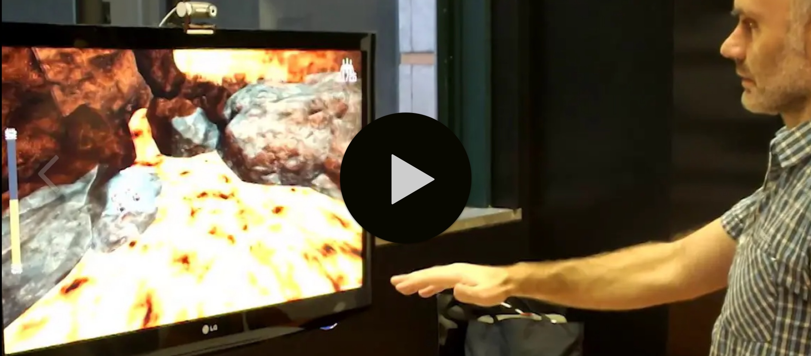
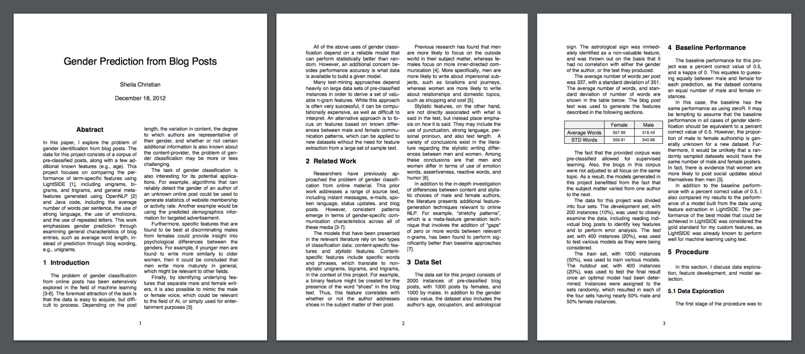
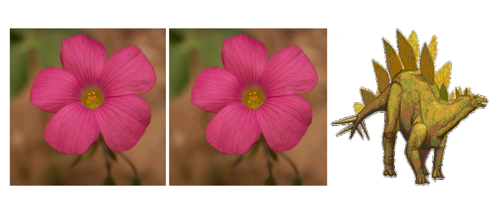

I have gotten to work on some very interesting projects in the field of HCI throughout my academic studies.
VOLCANO SALVATION GAME
I took a course on Game Design at the Madeira Interactive Technologies Institute while completing my masters in HCI. We created a video game that combined a Leap Motion hand tracking device and a webcam with facial tracking software.
Our team project was the winner of the CHI 2014 student game design competition. I wrote a conference paper for CHI describing our project’s contribution to the field of HCI. Leap Motion wrote a blog post about the use of their device for our project. We also created the following demo video. 
EAT & TRAVEL CAPSTONE
I completed a capstone project with a small team as part of my masters degree. Our task was to support a company that was hoping to design a new “virtual reality” theme restaurant.
We created a website to help orient both investors and new customers to the proposed experience. This demo video summarizes our final concept.

MACHINE LEARNING PROJECT
I took a course on machine learning while completing my masters in HCI at Carnegie Mellon University. Below is my final project, identifying gender based on a blog post writing sample. 
STEGANOGRAPHY REPORT
I completed a short but very interesting project about steganography while working towards my bachelor’s degree in computer science.
